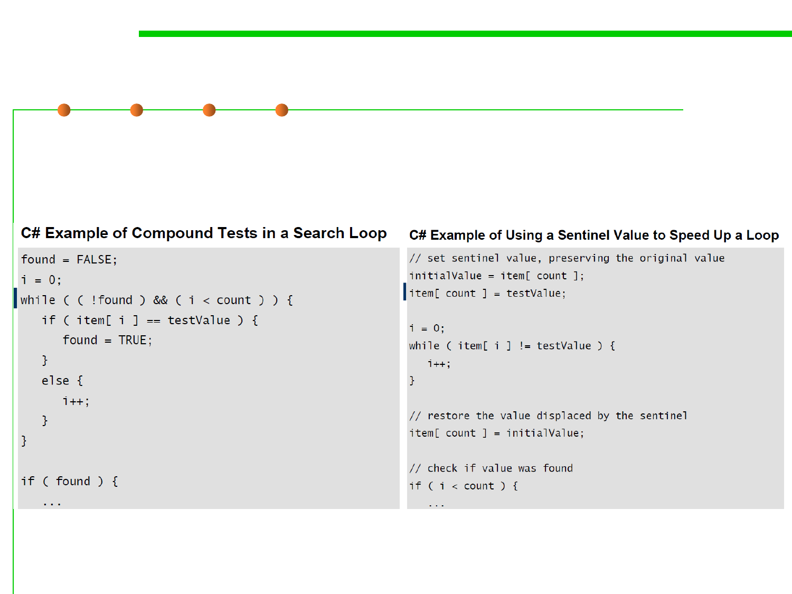

8.3 Code Tuning for Performance Optimization
Sentinel Values—哨兵值
▪ The classic example of a compound test that can be improved by use
of a sentinel is the search loop that checks both whether it has found
the value it is seeking and whether it has run out of values.
the loop really has three tests
for each iteration.
the loop really has one test
for each iteration.